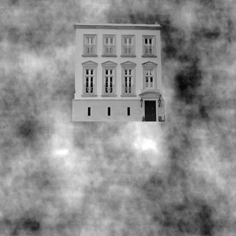
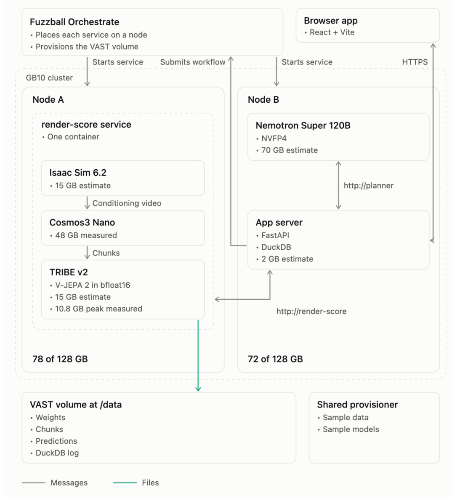

Simulaxon's AI agents turn a hypothesis into scenes they can generate, predict how the brain would respond, and use those predictions to decide what to test next.
Draft cards, 24 s, made in HyperFrames: the title, the scan-time cost rolling from 1 to 20 people, one click fitting an adapter, and each message travelling between the two workstations. Turn the sound on for the Ramp effects.
How does the brain make sense of an event as it unfolds?
To find out what drives a response, researchers need to vary what people see, hear, or know going into a scene.
Testing those comparisons with people gets expensive fast. A 20-person fMRI study with one hour per participant can cost nearly $14,000 in scan time alone.
Rate: $710 an hour, Harvard Center for Brain Science, academic external, weekday peak, FY27; 20 hours come to $14,200. The struck line is the one cut from the script.
Simulaxon gives researchers a way to develop the experiment before they bring in participants.
The agent decides what to vary and what to hold fixed, generates the clips, and compares the predicted brain responses.
It can then run a follow-up to see whether a pattern persists when another detail changes.
The predictions come from Meta's TRIBE v2, which trained on fMRI recordings of people watching films, television, and short videos of everyday events.
In separate evaluations, it recovered known patterns of brain activity for seeing faces versus places and hearing descriptions of emotional versus physical pain.



Each card is a run in the app: the stimulus beside TRIBE v2's predicted response, red higher and blue lower. Sources for the two lines: d'Ascoli and others, 2026 (arXiv:2605.04326), Table 1, § 2.5 and § 2.6.
TRIBE v2 predicts an average viewer it has never met. With people's measured fMRI, the app fits an adapter in one click: a map from TRIBE v2's prediction for each brain area to the responses those people actually had.
Median r over 212 reliable brain areas, on categories the fit never saw; the line on each bar is the noise ceiling, 0.675. From 38% to 60% of what the data allow. The adapter is higher in 179 of the 212 areas.
A benchmark: the same 30 people, scanner and kind of stimulus it was fitted on. It does not say how the adapter does on new stimuli.
An experiment read through the adapter. Its results name the adapter, show no r, and say when the stimuli lie outside what it was fitted on.
To build: #28 item 3 and #37.
The app and the video pipeline together need an estimated 150 GB of memory, so Fuzzball starts them on separate 128 GB workstations and gives both access to the same VAST storage.
When you submit a hypothesis, Nemotron Super 120B plans the experiment on the first workstation.
The app sends the scene specifications to the second, where Isaac Sim renders a reference video, NVIDIA Cosmos 3 Nano uses it to generate realistic footage, and TRIBE v2 predicts the fMRI response to each clip.
The app sends the predictions back to Nemotron to compare conditions. If the agent chooses a follow-up, the app submits it to Fuzzball.
Each round adds its clips, predictions, and log to the same VAST volume, so you can trace each result back to what the agent changed.

| Machine | Role | Runs on |
|---|---|---|
| DGX Spark | The desk: the lab app, interactive previews, the agent while a study is designed | The same repository and study code |
| Fuzzball cluster, GB10 nodes | Production: the planner as a service, study runs as workflows and task arrays, Prometheus and Grafana | Rocky Linux; study steps in rockylinux/rockylinux:10 containers |
The observer study ran on the cluster and matched the Spark's predictions at a median per-clip r of 0.9991.
Prometheus and Grafana watch every workflow, so compute is measured per stage and can be cut per stage.
Screenshots from the live dashboard once the cluster is back, time range set to real runs (#35).
Ask the agent to design an experiment around your hypothesis.
Upload footage or describe the scenes you want to test.
Review the generated scenes and predicted responses alongside the agent's follow-up experiments.
Provide a participant's fMRI recordings and the videos they watched. Fine-tune the model in one click to predict how that person would respond to new footage.
Run robotics experiments that use predicted human brain responses to test whether a robot can better anticipate what someone is about to do from the way they move.